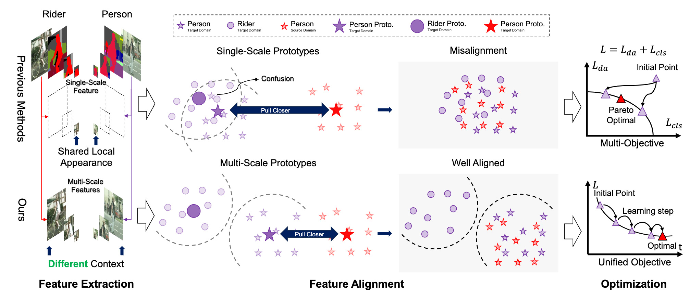

PhD Candidate
School of Computer Science and Engineering
University of Electronic Science and Technology of China
Email: davelee.uestc AT gmail.com
About Me
I am a PhD candidate advised by Wen Li at the School of Computer Science and Engineering, University of Electronic Science and Technology of China. I received the B.Eng. degree from the Department of Computer Science and Technology, Shihezi University in 2017.
My research interests include transfer learning, robust machine learning, and their applications in computer vision.
Please feel free to drop me an email if you have any questions or want to chat with me.
Selected Publications
Let Samples Speak: Mitigating Spurious Correlation by Exploiting the Clusterness of Samples
Weiwei Li, Junzhuo Liu, Yuanyuan Ren, Yuchen Zheng, Yahao Liu, Wen Li
Conference on Computer Vision and Pattern Recognition (CVPR), 2025
[Paper] [Code] [Project]
FineCops-Ref: A new Dataset and Task for Fine-Grained Compositional Referring Expression Comprehension
Junzhuo Liu, Xuzheng Yang, Weiwei Li, Peng Wang
Conference on Empirical Methods in Natural Language Processing (EMNLP), 2024
[Paper] [Code]

PMDAv2: Multi-Scale Prototype Matching for Domain Adaptive Semantic Segmentation
Weiwei Li, Yuchen Zheng, Yuanyuan Ren, Junzhuo Liu, Yahao Liu, Wen Li
Under Review
[Paper] [Code]
PMDA: Domain Alignment with Prototype Matching for Cross-Domain Adaptive Segmentation
Weiwei Li, Yuanyuan Ren, Junzhuo Liu, Chenyang Wang, Yuchen Zheng
IEEE International Conference on Multimedia and Expo (ICME), 2023, Oral
[Paper] [Code]
Improving Out-of-Distribution Detection with Margin-Based Prototype Learning
Junzhuo Liu, Yuanyuan Ren, Weiwei Li, Yuchen Zheng, Chenyang Wang
International Conference on Neural Information Processing (ICONIP), 2023
[Paper] [Code]
Services
- Conference Service:
- Reviewer, CVPR, 2025
- PC Member, ICONIP, 2024
- Reviewer, ICONIP, 2023
- Reviewer, ACAIT, 2023
- Journal Reviewer:
- IEEE Transactions on Circuits and Systems for Video Technology